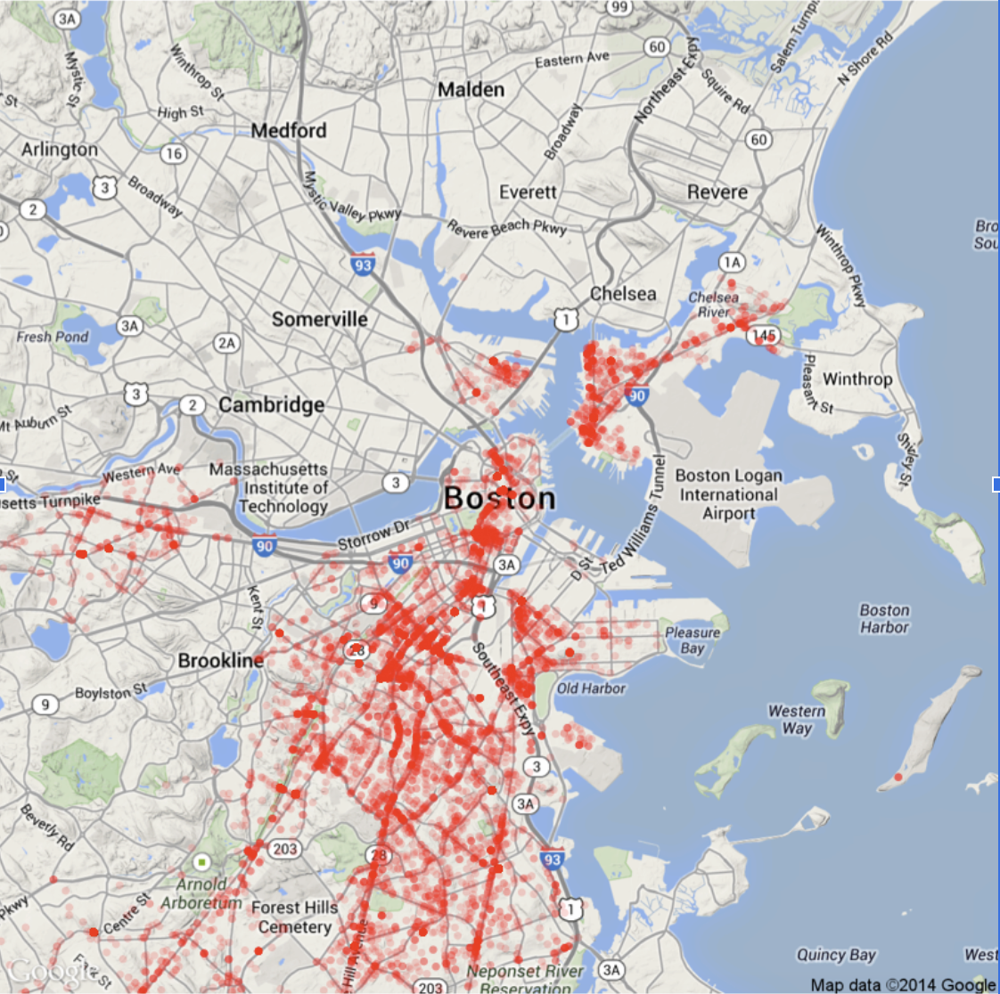

Elaborating on the project idea - Robberies can occur in every city in the United States and can affect public safety as well as the city’s reputation. In Boston, these crimes do not only pose a threat to individuals but also instill fear in local communities and disrupt the day-to-day lives of these residents. This project aims to dive deep into analyzing Boston crime data. The question of this project is if and how robbery crimes changed in Boston over the period between 2015 and 2018? By analyzing the data at hand, many statistical patterns can be visualized and explored as we aim to uncover some of the trends behind when, where, and why these crimes occur. This data could be used to target high-risk areas of robberies and look at communities where this crime occurs most frequently. The ability to understand these potential causes will help support efforts in Boston to make the city a safer place.
